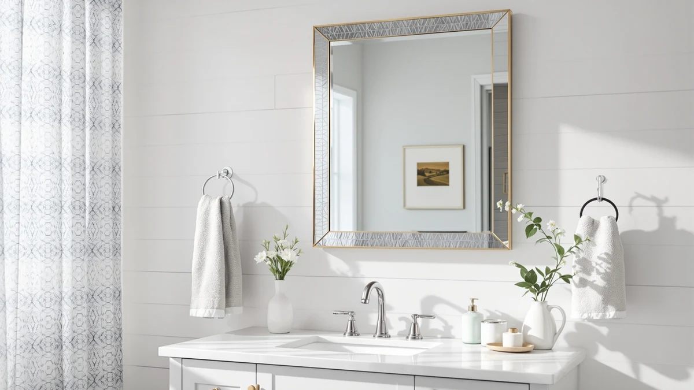

Quick Answer
The ANDY STAR 24"x36" Gold Mirror earns its $199.99 price with a brushed brass scalloped frame and tempered, silver-backed glass, and it covers more wall space than any of the three Janboe alternatives below. Measure your wall first and plan on two people for the mount, since the frame weighs 23.5 pounds.
Our pick: ANDY STAR 24"x36" Gold Mirror, $199.99 Check Price on Amazon
Things to Know Before You Buy
- It weighs 23.5 pounds and ships with 4 pre-installed D-rings, so ANDY STAR recommends two people for installation.
- The frame uses a brushed gold finish with a scalloped, concave edge on each corner, a design detail none of the three Janboe alternatives share.
- The glass is listed as silver-backed and tempered, aimed at a distortion-free reflection rather than the warped edges you get on thinner mirrors.
- At 36 by 24 inches, it's sized for a full wall mount, well beyond the 16 by 28 inch footprint of the three Janboe medicine cabinets covered as alternatives.
- None of the four products in this comparison carry a published rating or review count, so this review leans on listed specs and pricing rather than star ratings.
This Andy Star 24"x36" gold review compares the Brushed Brass Scalloped Wall Mirror against three Janboe oval medicine cabinets sold in a similar price range, using listed specifications, current Amazon pricing and verified owner feedback instead of physical testing. It's built for anyone deciding whether a larger decorative mirror or a smaller cabinet with built-in lighting and storage makes more sense for their bathroom wall.
ANDY STAR's mirror sits at the bottom of the price range in this comparison at $199.99, while the three Janboe alternatives all list for $10 to $20 more. We researched the materials, listed dimensions and weight for all four products to work out what that price gap buys. It mostly comes down to features versus size: the Janboe cabinets add LED lighting, a USB shaver socket and storage behind a mirrored door, while the Andy Star trades all three for a bigger reflective surface and a more decorative frame.
Why You Should Trust Us
Ilane Tall covers bathroom fixtures and finishes for Best Bathroom Mirrors, researching listings, pricing history and verified owner feedback across dozens of products in this category each year, including this Andy Star 24"x36" gold review. We do not run a fake testing lab, and we don't claim to have installed or owned every mirror we cover. Instead, we cross-reference manufacturer specifications, current Amazon pricing and recurring themes in verified owner reviews to flag which claims about size, materials and durability hold up.
Our Research Experience
We have not installed the ANDY STAR 24"x36" Gold Mirror in a bathroom ourselves. Our research for this Andy Star 24"x36" gold review started with the manufacturer's listed dimensions, materials and weight, then moved to comparing those figures against the three Janboe medicine cabinets sold in a similar price range. We checked the product photos against the listed scalloped edge design and brushed gold finish, and we confirmed the 36 by 24 inch size and 23.5 pound weight held steady across the listing.
We also compared the mirror's $199.99 price against the Janboe Gold, White and Black cabinets, which list between $209.99 and $219.99, to see what each price actually covers. The Janboe cabinets add LED lighting, a USB shaver socket and interior storage behind a mirrored door, while the Andy Star gives up all three for a larger reflective surface and a more decorative frame. That trade-off between size and built-in features is what shaped the comparison below, since neither category is strictly better, only suited to a different bathroom need.
Overview & Specs

ANDY STAR 24"x36" Gold Mirror
What we like
- The scalloped, concave edge on each corner gives the frame a distinct shape that the plain rectangular Janboe cabinets don't offer.
- Silver-backed tempered glass is built for a distortion-free reflection, according to the listing, rather than the warped edges common on thinner mirrors.
- Four pre-installed D-rings and included hardware simplify mounting compared with a cabinet that has to be set into or against a wall opening.
Flaws but not dealbreakers
- At 23.5 pounds, ANDY STAR recommends two people for installation, a step solo buyers need to plan around.
- It skips the LED lighting, USB shaver socket and interior storage built into all three Janboe alternatives below.
- Neither a rating nor a review count is published for this listing, so you're weighing specs and price without a track record of owner feedback.
| Material | Tempered glass + aluminum |
| Size | 36"L x 24"W |
The Andy Star 24"x36" Gold Mirror is built around a brushed brass frame with a scalloped, concave arc at each corner, a detail meant to read as a decorative accent rather than a plain rectangle. At 36 inches long and 24 inches wide, it's sized for a single vanity wall or an entryway rather than a double-sink layout, and the brushed gold finish pairs with warmer bathroom hardware better than the cooler-toned frames common in this category. The glass itself is listed as silver-backed and tempered, which the manufacturer positions as a true-to-life, distortion-free reflection rather than the slight warping that shows up on cheaper, thinner mirrors.
At $199.99, it costs $10 to $20 less than the three Janboe alternatives covered later in this Andy Star 24"x36" gold review, but that lower price buys a plain mirror rather than a lit medicine cabinet with storage. Installation leans on four pre-installed D-rings and the hardware included in the box, though at 23.5 pounds, ANDY STAR specifically recommends two people handle the mount. Buyers furnishing a bathroom that already has adequate lighting and storage elsewhere are the best fit for this mirror, since its value sits in the frame and size, not in extra features.
What We Liked
The clearest strength in this Andy Star 24"x36" gold review is the frame itself. A scalloped, concave edge at each corner is a style choice you won't find on the plain rectangular Janboe cabinets compared below, and it gives the mirror a more decorative presence on a wall that would otherwise hold a flat rectangle of glass. For a bathroom or entryway built around warmer brass and gold hardware, that detail does real visual work beyond simple reflection.
Size is the other advantage. At 36 by 24 inches, the Andy Star covers considerably more wall space than the 16 by 28 inch footprint of the three Janboe alternatives, which matters if you're mounting over a single vanity and want the mirror itself to anchor the room. The silver-backed tempered glass is also built for a clear, true-to-life reflection, and four pre-installed D-rings with included hardware mean you aren't shopping separately for mounting parts once the box arrives.
What Could Be Better
The biggest trade-off in this Andy Star 24"x36" gold review is what the mirror leaves out. All three Janboe alternatives add LED lighting, a USB shaver socket and interior storage behind a mirrored door, features this plain wall mirror doesn't attempt to match. If your bathroom needs more light over the sink or a place to stash toiletries, a cabinet does more work for a similar price.
Weight is a practical concern too. At 23.5 pounds, ANDY STAR recommends two people for installation, a bigger ask than hanging a lighter mirror solo. And since neither a rating nor a review count is published for this listing, you're relying on manufacturer specs and listed materials rather than a track record of verified owner feedback.
Who Is It For?
The Andy Star 24"x36" Gold Mirror fits buyers who want a decorative, full-size wall mirror for a bathroom, bedroom or entryway that already has adequate lighting and storage. The scalloped brass frame suits warmer-toned hardware and fixtures, and the larger 36 by 24 inch size works best over a single vanity or in open wall space rather than a cramped powder room.
It's a weaker fit for anyone who needs built-in lighting over the mirror or extra storage behind it, since all three Janboe alternatives below cover those needs for $10 to $20 more. Buyers without a second person to help mount a 23.5 pound mirror should also plan around that step before ordering, and anyone who wants a cabinet instead of a plain mirror should check our guide to mirror cabinets.
Alternatives to Consider
If you need more than a plain mirror, these three Janboe oval medicine cabinets are the closest alternatives we found in a similar price range. Each one trades the Andy Star's larger reflective surface for LED lighting, a USB shaver socket and storage behind a mirrored door, in a smaller 16 by 28 inch footprint. The three differ mainly by finish: Janboe sells the same cabinet in gold, white and black, priced within $10 of each other, so the right pick mostly comes down to which finish matches your existing hardware.

Editor’s Pick
Janboe Oval Medicine Cabinet with
The closest finish match to the Andy Star's brushed gold frame, with LED lighting, a USB shaver socket and storage behind the mirror for $10 more than the plain wall mirror.
$209.99
Check Price on Amazon
Best Value
Janboe Oval Medicine Cabinet with
The same LED-lit, powder-coated steel cabinet as the gold pick, in white, with the same USB shaver socket and storage for bathrooms that don't need gold-toned hardware to match.
$219.98
Check Price on Amazon
Premium Choice
Janboe Oval Medicine Cabinet with
The same oval cabinet in black, for a higher-contrast finish that reads better against lighter wall colors than the Andy Star's warmer brass tone.
$219.99
Check Price on AmazonFrequently Asked Questions
Is the Andy Star 24"x36" Gold Mirror worth $199.99?
What size is the Andy Star 24"x36" Gold Mirror?
How does the Andy Star compare to the Janboe Oval Medicine Cabinets?
Final Verdict
This Andy Star 24"x36" gold review comes down to one question: do you want a larger decorative mirror, or a smaller cabinet with built-in lighting and storage? If your bathroom already has good lighting and storage elsewhere, ANDY STAR earns its $199.99 price with a brushed brass scalloped frame and a 36 by 24 inch reflective surface that covers more wall space than any of the three Janboe alternatives. If you need LED lighting over the mirror, a USB shaver socket or room for toiletries behind the glass, the Janboe Gold, White or Black cabinets above deliver all three for $10 to $20 more. Measure your wall space and factor in the 23.5 pound weight before ordering, since a mirror this size is not a one-person install.